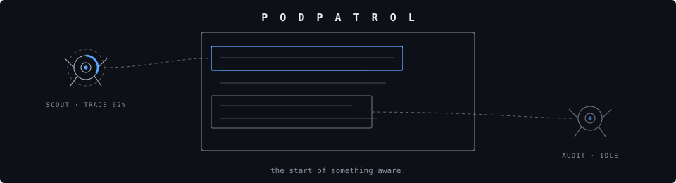
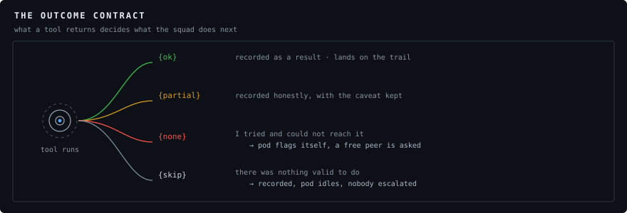

the start of something aware.

A spinner hides work, and hidden work is indistinguishable from nothing happening. A pod flying to the paragraph it is checking, filling a progress arc at the speed of the real fetch, then reporting what it found — that is the same latency rendered as visible labour. It also buys honesty for free: when a claim ends up marked disputed, you watched the pod try to verify it and fail, so the caveat is earned rather than boilerplate.

<script src="podpatrol.js"></script> <div style="position:relative"> <article data-pod-target="c1" data-pod-name="Termination clause">…</article> <pod-patrol autonomy="quorum"></pod-patrol> </div>